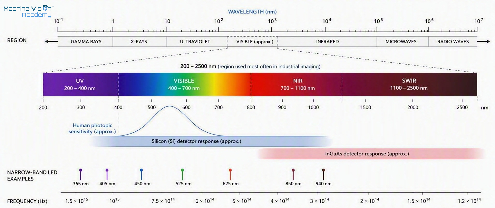
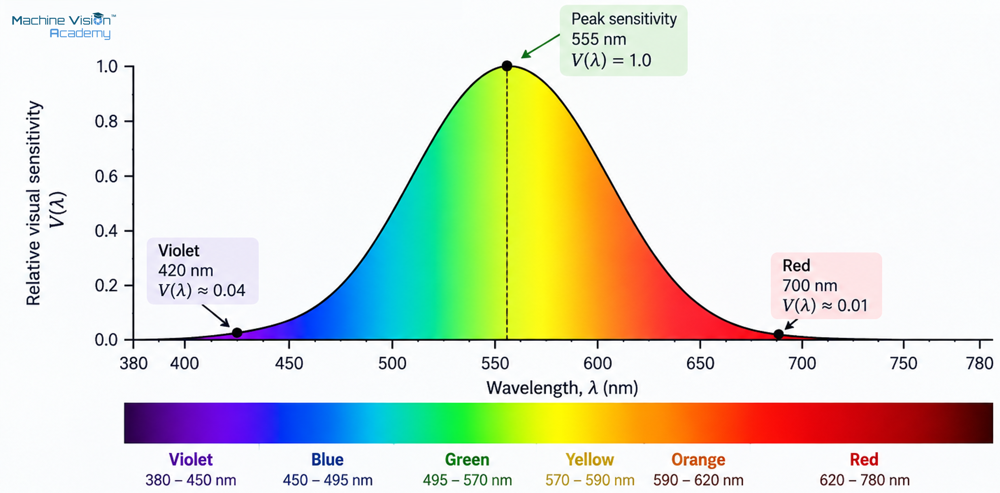
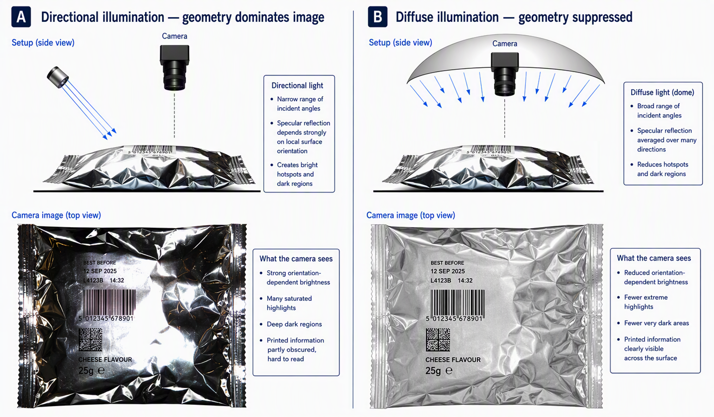
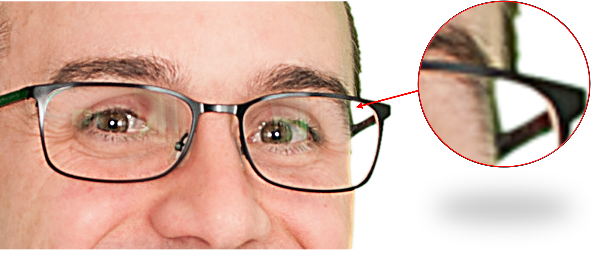
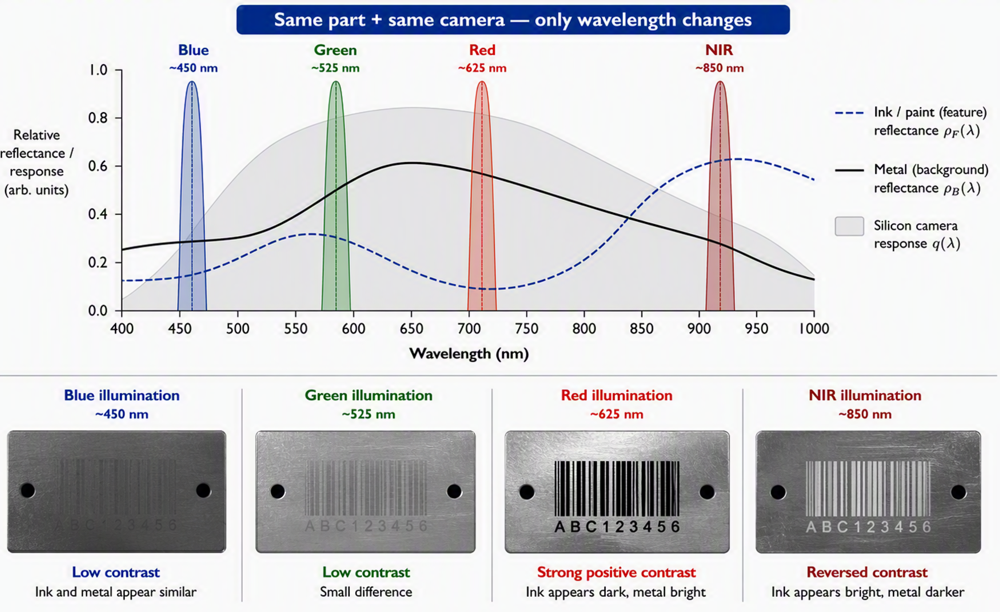
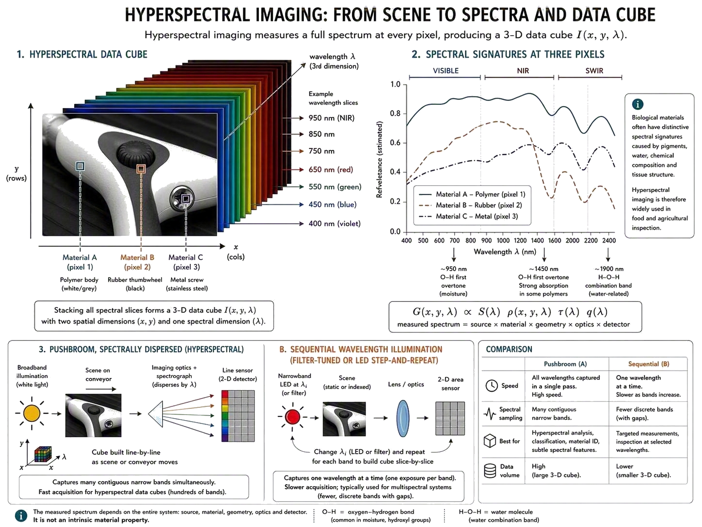
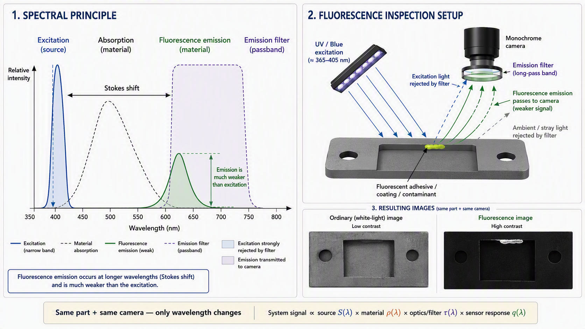
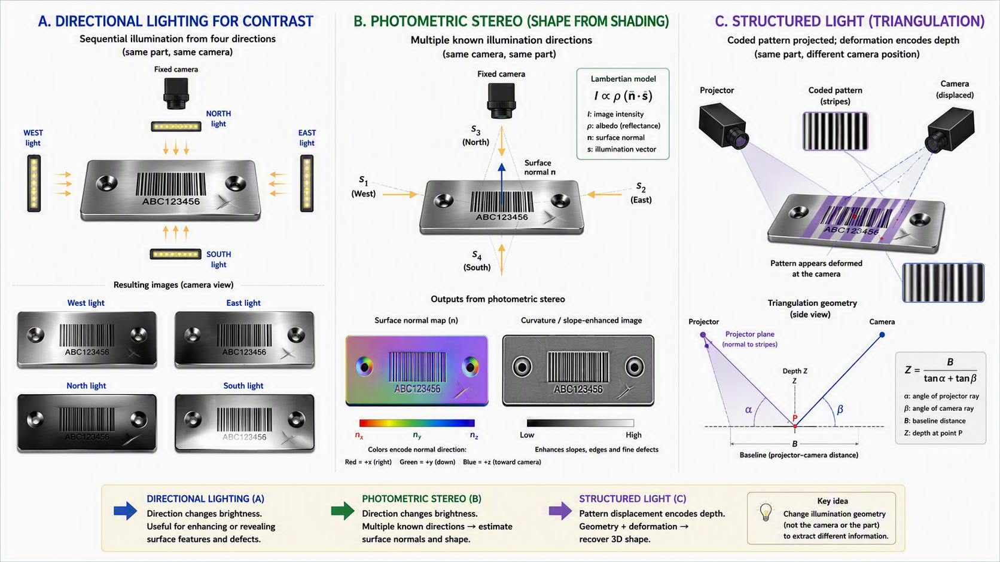

3 Light, colour and radiometry
Everything a vision system knows about the physical world reaches the sensor through light. A camera does not observe an object directly; it records optical radiation that has been emitted, reflected, transmitted, scattered or otherwise modified by the scene and then admitted by the optical system. The appearance of a scratch, edge, printed mark, transparent layer or coloured component is therefore governed first by the physics of light and matter, and only later by image processing.
Describing that light is less straightforward than it may initially appear. Depending on the problem, physics represents light using rays, electromagnetic waves or photons, while modern quantum optics provides a deeper description from which some of these behaviours emerge. These models are complementary rather than competing: each exposes different aspects of the same physical phenomenon and becomes useful for different engineering questions. This chapter introduces them at the level required for machine vision, while deliberately avoiding theoretical depth that does not contribute to understanding or designing an imaging system.
The previous chapter argued for constraint-first engineering: improve the image in the physical world before asking software to compensate for a weak one. This chapter develops the physical language behind that principle. It is deliberately more theoretical because practical decisions about illumination geometry and wavelength, optical filtering, exposure, colour, polarisation and sensor selection ultimately depend on the behaviour of light introduced here.
The theory in this chapter becomes useful when it helps us manipulate the difference between a feature and its background. Most practical illumination problems can be approached through a small set of physical levers:
- geometry and angular structure — decide which reflected or transmitted rays can enter the lens;
- wavelength and spectrum — exploit differences in reflectance, transmission, absorption or fluorescence;
- filtering and polarisation — reject unwanted wavelengths, ambient light or specular components;
- optical exposure — deliver enough useful photons, uniformly and repeatably, within the available motion and cycle-time constraints.
This chapter explains the physics behind these levers; the later optics and illumination chapters turn them into lens, filter and lighting choices.
For readers who want a parallel treatment that keeps the complete automated-inspection system in view, Beyerer, Puente León and Frese develop light, image formation and radiometry directly in the context of machine vision rather than as isolated optical theory [1].
3.1 Physical foundations of light
Before quantifying light, we first need to decide how to describe it. No single model is equally convenient for every problem, and machine vision routinely moves between several.
The simplest is the ray model, which represents light as travelling along idealised paths. It deliberately ignores wave effects such as phase and diffraction, but is remarkably powerful when the dimensions of the imaging system are much larger than the wavelength of light. Ray geometry allows us to reason about illumination direction, reflection, refraction and image formation without describing the underlying electromagnetic field. Perhaps its simplest demonstration is the pinhole camera: straight-line geometry alone can explain how points in a three-dimensional scene form an inverted two-dimensional image. The pinhole model is developed in the optics chapter, where it becomes the starting point for perspective, magnification, field of view and lens-based image formation.
The electromagnetic-wave model provides the classical physical description needed when wavelength, phase or polarisation matters. It explains phenomena such as interference and diffraction that cannot be represented adequately using rays alone. At the generation and detection ends of the imaging chain, the photon description becomes particularly useful because optical energy is exchanged with matter in discrete quantities. This ultimately underpins LED and laser emission, semiconductor photodetection, quantum efficiency and photon shot noise. Modern quantum optics goes deeper still by describing the electromagnetic field itself as quantised, although this level of theory is rarely required for conventional machine-vision engineering.
The useful principle is therefore not to search for one model to use everywhere, but to choose the simplest description that captures the phenomenon being considered. The models used throughout the handbook can be summarised as follows:
| Description | What it represents | Machine-vision questions it answers |
|---|---|---|
| Geometrical/ray optics | Light represented by idealised propagation paths; phase is ignored. | Where does illumination travel? Which reflected rays enter the lens? What field of view and image geometry result? |
| Classical electromagnetic waves | Continuous electric and magnetic fields governed by Maxwell’s equations. | How do wavelength, phase, interference, diffraction, refraction and polarisation affect the image? |
| Photon / quantum description | Optical energy exchanged in discrete quanta with energy \(E=h\nu\). | How much energy does each photon carry? How does a semiconductor detect light? What sets quantum-efficiency and shot-noise limits? |
| Quantised electromagnetic field | Modern quantum-optical description in which field modes are quantised and photons are excitations of those modes. | Foundations of quantum optics, single-photon statistics and non-classical states; rarely required for conventional machine-vision design. |
The familiar statement that light is “both a wave and a particle” is useful shorthand, but it can suggest that light literally switches between two classical forms. Modern quantum optics instead treats the electromagnetic field as quantised; photon language describes discrete excitations and energy exchange, while wave-like interference and propagation emerge from the field description. Classical Maxwell theory remains an excellent macroscopic limit for most ordinary imaging conditions.
For readers who want the formal transition from the classical electromagnetic field to quantum optics, Loudon’s The Quantum Theory of Light develops field quantisation, photon states and quantum-optical phenomena in substantially greater depth [2].
3.1.1 Electromagnetic radiation, photons and the optical spectrum
For most of the propagation problems in this handbook, the classical electromagnetic-wave description is the natural starting point. In a homogeneous medium, light can be represented as coupled electric and magnetic fields propagating through space. A monochromatic plane wave has a sinusoidal field variation characterised by amplitude, wavelength, frequency, phase and polarisation. The electric and magnetic fields are transverse to the direction of propagation, and their orientation is the basis of the polarisation concepts developed later in this chapter.
In vacuum, wavelength and frequency are linked by the speed of light:
\[c=\lambda\nu, \qquad c=2.99792458\times10^8\ \mathrm{m\,s^{-1}}.\]
where \(\lambda\) is the vacuum wavelength and \(\nu\) is frequency. In a medium with refractive index \(n\), the phase velocity becomes
\[v=\frac{c}{n}.\]
The frequency is fixed by the source and remains continuous across an interface, so the wavelength in the medium becomes
\[\lambda=\frac{\lambda_0}{n}.\]
This distinction becomes important when refraction, interference, optical thickness or wavelength-dependent material properties are considered.
Maxwell’s equations are the four fundamental equations of classical electromagnetism. At a high level, they describe how electric charges and currents produce electric and magnetic fields, how changing electric and magnetic fields generate one another, and how those fields propagate through space. One of their most important consequences is that a changing electric field can sustain a changing magnetic field, and vice versa, allowing an electromagnetic disturbance to propagate even through empty space. Light is such an electromagnetic wave.
The complete Maxwell equations are not required for most machine-vision calculations. Instead, it is useful to examine one important result that follows from them. In a homogeneous, source-free and non-dispersive region, the electric and magnetic fields satisfy the wave equations
\[\nabla^2\mathbf{E} -\frac{1}{v^2} \frac{\partial^2\mathbf{E}}{\partial t^2} =0, \qquad \nabla^2\mathbf{B} -\frac{1}{v^2} \frac{\partial^2\mathbf{B}}{\partial t^2} =0.\]
Here, \(\mathbf{E}\) and \(\mathbf{B}\) are the electric- and magnetic-field vectors, \(t\) is time and \(v\) is the propagation velocity of the wave through the medium. In vacuum, \(v=c\). The symbol \(\partial\) denotes a partial derivative, used when a quantity depends on several variables; \(\partial^2\) , the second derivative with respect to time describes how the rate of change of the field itself changes with time.
The inverted triangle \(\nabla\) is called nabla or del. It is a vector differential operator used to describe how quantities change through space.
In the wave equations it appears as \(\nabla^2\), called the Laplacian or del squared. In Cartesian coordinates,
\[\nabla^2 = \frac{\partial^2}{\partial x^2} + \frac{\partial^2}{\partial y^2} + \frac{\partial^2}{\partial z^2}.\]
Applied to \(\mathbf{E}\) or \(\mathbf{B}\), it describes the spatial curvature or variation of the field around a point. It is not necessary to calculate the Laplacian to follow the rest of this chapter; recognising what the symbol represents is sufficient.
The structure of the wave equations is more important here than their derivation. They connect how the electromagnetic field varies through space with how it varies through time. For the electric field, this can be read conceptually as
\[\underbrace{\nabla^2\mathbf{E}}_{\text{variation in space}} \qquad\longleftrightarrow\qquad \underbrace{ \frac{1}{v^2} \frac{\partial^2\mathbf{E}}{\partial t^2} }_{\text{variation in time}}.\]
The same relationship applies to the magnetic field. This mathematical structure permits disturbances in the fields to propagate through space as waves.
The wave equations admit many possible solutions. A particularly useful idealisation for understanding optical behaviour is the monochromatic plane wave:
\[\mathbf{E}(\mathbf{r},t) = \mathbf{E}_0 \cos\left( \mathbf{k}\cdot\mathbf{r} -\omega t +\phi \right).\]
This expression describes the electric field at any position \(\mathbf{r}\) and time \(t\). Its individual terms have useful physical meanings:
- \(\mathbf{E}(\mathbf{r},t)\) is the electric field at the position and time being considered;
- \(\mathbf{E}_0\) defines the amplitude and orientation of the electric field;
- \(\mathbf{r}=(x,y,z)\) is the position vector;
- \(\mathbf{k}\) is the wave vector: its direction gives the direction of propagation and its magnitude describes how rapidly phase changes with distance;
- \(\mathbf{k}\cdot\mathbf{r}\) is the dot product that relates position to phase along the propagation direction;
- \(\omega\) is the angular frequency, measured in radians per second;
- \(\phi\) is the phase offset, defining where within its oscillation cycle the wave begins.
The wave vector and angular frequency are connected to the more familiar wavelength and frequency through
\[|\mathbf{k}|=\frac{2\pi}{\lambda}, \qquad \omega=2\pi\nu.\]
A complete oscillation corresponds to \(2\pi\) radians. The first relationship therefore says that the phase changes by \(2\pi\) over one wavelength \(\lambda\): shorter wavelengths have larger wave numbers \(|\mathbf{k}|\) and change phase more rapidly with distance. The second expresses the same idea in time: a field oscillating at \(\nu\) cycles per second has an angular frequency of \(2\pi\nu\) radians per second.
The plane-wave equation can consequently be read more intuitively as
\[\mathbf{E}(\mathbf{r},t) = \underbrace{\mathbf{E}_0}_{\text{amplitude and orientation}} \cos \left( \underbrace{\mathbf{k}\cdot\mathbf{r}}_{\text{position}} - \underbrace{\omega t}_{\text{time}} + \underbrace{\phi}_{\text{phase offset}} \right).\]
If time is held fixed, the equation describes the sinusoidal field pattern through space. If position is held fixed, it describes the field oscillating with time at that location. Changing \(\phi\) shifts the oscillation without changing its wavelength or frequency, while changing the orientation of \(\mathbf{E}_0\) changes the polarisation of a linearly polarised wave.
For a propagating electromagnetic wave, the magnetic field follows the corresponding electric-field behaviour while remaining perpendicular to the electric field and to the direction of propagation. The interactive representation in Figure 3.1 provides a more intuitive way to explore these relationships before they are used later in the chapter.
You will rarely solve these wave equations when designing a conventional vision system. Their value is that they expose several quantities that later become practical engineering variables:
- wavelength controls spectral interactions and contributes to diffraction;
- phase determines interference behaviour and becomes important with coherent illumination;
- electric-field orientation gives rise to polarisation;
- electromagnetic behaviour at material boundaries produces reflection, transmission and refraction.
For a fuller derivation of electromagnetic-wave propagation from Maxwell’s equations and its relationship to geometrical optics, see Hecht [3].
The photon description becomes useful when optical energy is generated or absorbed. A photon associated with frequency \(\nu\) carries energy
\[E_{\gamma}=h\nu=\frac{hc}{\lambda},\]
with Planck constant
\[h=6.62607015\times10^{-34}\ \mathrm{J\,s}.\]
A convenient engineering approximation is
\[E_\gamma[\mathrm{eV}] \approx \frac{1240}{\lambda[\mathrm{nm}]}.\]
Shorter-wavelength photons therefore carry more energy individually. In a semiconductor image sensor, an absorbed photon can transfer its energy to an electron, allowing that electron to move into a state where it can contribute to an electrical signal. This process leaves behind an empty state known as a hole; together, the mobile electron and the hole are called an electron–hole pair. The photon must carry sufficient energy for this transition, which is one reason different semiconductor materials respond to different wavelength ranges. At normal illumination levels it is usually more convenient to describe the incoming light as continuous optical power using radiometric quantities, but the camera signal ultimately results from a finite number of absorbed photons and the electrical charges they generate. This discrete nature of detection later becomes important when considering shot noise.
The same quantum viewpoint applies at the source. LEDs emit through electron-hole recombination, while lasers rely on stimulated emission. The machine-vision engineer normally does not need to model these processes from first principles; source spectra, radiometric output, stability and modulation behaviour are the useful engineering interfaces. The quantum description explains why those interfaces have the form they do, while classical wave and ray descriptions remain the efficient tools for designing how the emitted radiation reaches the part and camera.
For a deeper classical treatment of electromagnetic waves, interference, diffraction, polarisation and geometrical optics, Hecht is a useful companion text [3]. Readers who want to go beyond the engineering photon model into formal quantum optics can continue with Loudon [2].
The electromagnetic spectrum extends far beyond human vision. A particularly memorable demonstration came from William Herschel in 1800. While measuring heating across the colours produced by a prism, he also measured beyond the visible red end of the spectrum expecting to log a drop in temperature but found an even stronger heating effect where no light was visible to the eye, providing early experimental evidence of what is now called infrared radiation [4].
The boundaries between named spectral bands are conventions rather than physical discontinuities. Machine vision commonly uses ultraviolet (UV), visible (VIS), near infrared (NIR) and short-wave infrared (SWIR), with longer-wave infrared used for thermal imaging. Silicon sensors cover much of the visible spectrum and extend into the NIR; InGaAs detectors are widely used beyond the silicon cut-off in the SWIR. Exact useful ranges depend on sensor construction, optics, coatings, filters and the required signal-to-noise ratio rather than on the band name alone.
For machine vision, the useful spectrum is defined by the complete imaging chain. A light source may emit strongly at a wavelength that the object absorbs, the lens or protective window blocks, or the sensor detects poorly. Conversely, radiation invisible to the operator can produce a strong camera response. Wavelength should therefore be treated as a selectable engineering variable, not merely as the colour of a lamp.
A visual check by eye is useful during setup, but it is not a measurement of what the camera receives. Always consider the source spectrum, object response, optical/filter transmission and sensor spectral sensitivity together.
- A bright-looking lamp can provide little signal in the wavelength band that matters.
- A near-infrared source can appear dark to a person while strongly exposing a silicon camera.
- Changing the camera, lens, protective window or filter can change contrast even when the light and part are unchanged.
| Band | Approximate wavelength range | Typical machine-vision role | Common detector families |
|---|---|---|---|
| UV | ~200–400 nm | Fluorescence excitation; coatings; surface and print contrast | UV-enhanced silicon; specialised UV detectors |
| Visible | ~400–700 nm | General monochrome and colour imaging | Silicon CCD/CMOS |
| NIR | ~700–1100 nm | Contrast through some inks and coatings; material contrast outside normal human vision | Silicon CCD/CMOS |
| SWIR | ~1000–1700 nm (common InGaAs range) | Moisture, fill level, semiconductor/solar inspection and material discrimination | InGaAs |

Real light sources are rarely perfectly monochromatic. Instead of emitting all their optical power at one wavelength, they normally produce a spectral distribution: some wavelengths contain more optical power than others. Two sources can therefore have the same total radiant power but interact very differently with a material or camera because that power is distributed differently across the spectrum. For machine vision, the shape of the spectrum can be as important as the total amount of light.
Thermal emitters provide a useful example. Any object above absolute zero emits electromagnetic radiation as a consequence of its temperature. To describe this behaviour, physics uses the idealised black body as a reference. A perfect black body absorbs all electromagnetic radiation incident upon it, reflecting and transmitting none of it, and is also the maximum possible thermal emitter at a given temperature. Its emitted spectrum can therefore be described solely in terms of its temperature and wavelength, without the additional complication of radiation reflected from its surroundings. Planck’s law describes how this thermal radiation is distributed across wavelength: as the temperature increases, the total emitted radiation increases and the distribution shifts towards shorter wavelengths. Real materials do not behave as perfect black bodies; their emission is modified by their wavelength-dependent emissivity, and they may also reflect radiation from their surroundings. These effects become particularly important in thermal imaging and are considered later in the handbook.
Planck’s law therefore describes a thermal emitter as a distribution of radiation across wavelength, rather than as radiation emitted at a single wavelength. For a black body at any given temperature, this distribution has a wavelength at which its spectral radiance reaches a maximum. As the temperature changes, the position of this maximum also changes.
Wien’s displacement law provides a simple way to calculate where that peak occurs:
\[\lambda_{\max}T=b,\]
or, more conveniently,
\[\lambda_{\max}=\frac{b}{T},\]
where:
- \(\lambda_{\max}\) is the wavelength at which the black body’s spectral radiance is greatest, measured in metres;
- \(T\) is the absolute temperature of the emitter, measured in kelvin (K);
- \(b\) is Wien’s displacement constant,
\[b\approx2.898\times10^{-3}\ \mathrm{m\,K}.\]
The inverse relationship is the important engineering point: as an object becomes hotter, the peak of its thermal emission moves towards shorter wavelengths.
For example, an object at approximately \(300\ \mathrm{K}\), close to room temperature, has a peak wavelength of
\[\lambda_{\max} \approx \frac{2.898\times10^{-3}}{300} \approx 9.7\ \mu\mathrm{m}.\]
This is well into the infrared and helps explain something that is otherwise easy to overlook: ordinary objects around us are continuously emitting electromagnetic radiation even though we cannot see it. A long-wave infrared camera can detect this radiation because its detector operates in a spectral region inaccessible to human vision.
As temperature increases, the thermal spectrum not only becomes more intense but also shifts progressively towards shorter wavelengths. At sufficiently high temperatures, a significant part of the emission enters the visible spectrum and the object begins to glow. This is why a hot object may first appear dull red and then become progressively brighter as its temperature rises. The filament of an incandescent or halogen lamp operates at a sufficiently high temperature for its thermal spectrum to extend strongly into the visible region, although a substantial proportion of its radiation remains in the infrared.
For machine vision, Wien’s law provides a useful connection between object temperature, emitted spectrum and detector selection. It helps explain why thermal cameras operate in infrared spectral bands, why incandescent and halogen sources produce substantial infrared radiation, and why visible appearance alone provides an incomplete description of a source’s optical output. Planck’s and Wien’s laws are not normally calculations required when configuring a conventional visible-light inspection, but they provide the physical basis for understanding broadband thermal sources, colour temperature and thermal imaging developed later in the handbook.
For camera-oriented examples of how wavelength, illumination geometry and filtering affect machine-vision contrast, the Advanced Illumination practical guide and the CCS Theory of Light and Color series provide useful supplementary reading [5], [6]. They provide a practical complement to the more formal optical treatment in Hecht [3].
3.1.2 Radiometric quantities: radiant flux, irradiance and radiance
The previous subsection described optical energy at the level of individual photons. A photon of wavelength \(\lambda\) carries energy \(E_\gamma=hc/\lambda\), and a camera signal ultimately results from a finite number of those photons being absorbed by the sensor. In most machine-vision applications, however, an enormous number of photons are emitted, reflected and detected during every exposure. Following each photon individually would be neither practical nor useful. Instead, we describe their collective transport of energy using radiometry.
The two descriptions are directly connected. If \(N\) is the number of photons, and the radiation is monochromatic so that every photon carries the same energy \(E_\gamma\), their total radiant energy is
\[Q_e = N E_\gamma .\]
If those photons arrive over time, their photon rate is
\[\dot N=\frac{dN}{dt} \qquad [\mathrm{photons\,s^{-1}}].\]
The dot above \(N\) is important: \(N\) represents a number of photons, whereas \(\dot N\) represents how many photons arrive per second. The corresponding radiant power, or radiant flux, is
\[\Phi_e = \dot N E_\gamma = \dot N\frac{hc}{\lambda}.\]
The units make the relationship particularly clear:
\[\underbrace{\mathrm{photons\,s^{-1}}}_{\dot N} \times \underbrace{\mathrm{J\,photon^{-1}}}_{E_\gamma} = \underbrace{\mathrm{J\,s^{-1}}}_{\Phi_e} = \mathrm{W}.\]
Equivalently,
\[\dot N = \frac{\Phi_e}{E_\gamma} = \frac{\Phi_e\lambda}{hc} \qquad [\mathrm{photons\,s^{-1}}].\]
Photon energy tells us how much energy each photon carries; radiometry tells us how much optical energy is being transported collectively.
Two monochromatic sources can therefore deliver the same radiant power while producing different numbers of photons per second. Longer-wavelength photons carry less energy individually, so more of them are required to transport the same optical power. This does not necessarily mean a larger camera signal: the sensor must also absorb those photons efficiently, and its quantum efficiency depends on wavelength.
Radiometry provides the practical language for following this optical energy through a machine-vision system. The terminology can initially appear excessive, but the quantities are easier to understand when treated as answers to different questions: how much optical power is there, where is it travelling, over what area is it distributed, and how much energy eventually accumulates at the sensor?
The starting quantity is radiant energy, \(Q_e\), measured in joules. Radiant flux, \(\Phi_e\), often called radiant power, describes how quickly that energy is transferred:
\[Q_e \quad [\mathrm{J}], \qquad \Phi_e=\frac{dQ_e}{dt} \quad [\mathrm{W}].\]
A radiant flux of 1 W therefore represents the transfer of one joule of optical energy per second. This is an optical watt, not the electrical power consumed by the illumination source. A LED consuming 10 W electrically, for example, will emit only part of that input power as optical radiation.
Power alone does not tell us where the radiation is going. Direction is described using a solid angle, the three-dimensional equivalent of an ordinary angle. For a small area \(dA\) viewed from distance \(r\), where its normal forms an angle \(\theta\) with the viewing direction,
\[d\Omega = \frac{dA\cos\theta}{r^2} \qquad [\mathrm{sr}].\]
A complete sphere contains \(4\pi\) steradians. Radiant intensity, \(I_e\), describes how radiant flux is distributed with direction:
\[I_e = \frac{d\Phi_e}{d\Omega} \qquad [\mathrm{W\,sr^{-1}}].\]
Once radiation reaches a surface, irradiance, \(E_e\), describes the radiant power arriving per unit area:
\[E_e = \frac{d\Phi_e}{dA} \qquad [\mathrm{W\,m^{-2}}].\]
Irradiance is particularly useful in machine vision because it can describe how strongly an illuminator exposes a workpiece or how much optical power per unit area reaches the image sensor. The corresponding quantity for radiation leaving a surface is radiant exitance, \(M_e\):
\[M_e = \frac{d\Phi_e}{dA} \qquad [\mathrm{W\,m^{-2}}].\]
The two therefore have the same units but describe opposite directions relative to the surface: irradiance arrives; exitance leaves.
A camera, however, does not collect all the radiation leaving a surface. It collects only the portion travelling within the directions accepted by its lens. For imaging, we therefore need a quantity that describes both where the radiation leaves the surface and in which direction it travels. This is radiance, \(L_e\):
\[L_e = \frac{d^2\Phi_e} {dA\cos\theta\,d\Omega} \qquad [\mathrm{W\,m^{-2}\,sr^{-1}}].\]
Radiance provides the natural connection between a scene patch and the optical system viewing it. An ideal passive optical system cannot arbitrarily increase radiance; more precisely, \(L_e/n^2\) is conserved through lossless geometrical propagation when refractive-index changes are included. A lens can collect a larger portion of the available radiation and redistribute it onto the sensor, but it cannot create optical brightness from nothing.
Finally, the sensor accumulates optical energy throughout its exposure rather than responding to irradiance at only one instant. Radiant exposure, \(H_e\), describes this accumulated energy per unit area:
\[H_e = \int_0^{t_{\mathrm{exp}}} E_e(t)\,dt \qquad [\mathrm{J\,m^{-2}}].\]
For constant irradiance,
\[H_e=E_e\,t_{\mathrm{exp}}.\]
This closes the loop back to the photon description. At a fixed wavelength, greater irradiance means more photons arriving per unit area and unit time, while a longer exposure allows that photon flow to continue for longer. Provided the sensor remains within its linear operating range, either increases the number of photo-generated charge carriers and therefore the recorded signal. The sensor chapter develops this relationship further through quantum efficiency, shot noise, full-well capacity, gain and saturation.
The quantities introduced above are summarised in Table 3.3. The important distinction is not simply their units, but what information has been added to the description of the optical energy: total power, direction, area, direction and area together, or accumulation over time.
| Quantity | Symbol | SI unit | Practical interpretation |
|---|---|---|---|
| Radiant energy | \(Q_e\) | J | Light source - Total optical energy |
| Radiant flux | \(\Phi_e\) | W | Light source - Optical power |
| Radiant intensity | \(I_e\) | W sr\(^{-1}\) | Light source - Source power per direction |
| Irradiance | \(E_e\) | W m\(^{-2}\) | Object - Power arriving per unit area |
| Radiant exitance | \(M_e\) | W m\(^{-2}\) | Object - Power leaving an object per unit area |
| Radiance | \(L_e\) | W m\(^{-2}\) sr\(^{-1}\) | Object - Power per projected area and direction |
| Radiant exposure | \(H_e\) | J m\(^{-2}\) | Sensor - Energy accumulated per unit area during exposure |
For broadband radiation, these quantities can also be expressed spectrally. For example, spectral irradiance \(E_{e,\lambda}(\lambda)\) describes how irradiance is distributed with wavelength, and the total irradiance is recovered by integrating over the relevant spectral range:
\[E_e = \int E_{e,\lambda}(\lambda)\,d\lambda .\]
This spectral form becomes particularly important in machine vision because the source spectrum, material response, optical transmission and sensor quantum efficiency can all vary strongly with wavelength. At the sensor, the expected number of collected photoelectrons can be estimated from
\[N_e \approx A_p t_{\mathrm{exp}} \int \frac{ E_{e,\lambda}(\lambda) QE(\lambda) \lambda }{ hc } \,d\lambda ,\]
where \(A_p\) is the pixel area and \(QE(\lambda)\) is the wavelength-dependent quantum efficiency. The factor \(\lambda/(hc)\) converts radiant energy into photon number, reconnecting the radiometric description with the photon model introduced in Chapter 3. This relationship will be developed further when image sensors are considered.
A deeper way of understanding the conservation of radiance is through etendue, which describes how an optical bundle occupies both an area and a range of propagation directions. In simplified form,
\[G=n^2A\Omega,\]
where \(A\) is the area occupied by the optical bundle, \(\Omega\) is its solid angle and \(n\) is the refractive index of the medium. In an ideal lossless passive optical system, etendue cannot decrease. In practical terms, light collected from a large area or over a wide range of directions cannot be arbitrarily compressed into both a smaller area and a narrower angular range. This principle establishes fundamental limits on light collection and becomes relevant when considering lens aperture, numerical aperture, illumination coupling and optical throughput. For a deeper treatment of radiance and etendue, see Ohno [7].
Passive optics can collect, redirect and redistribute available light, but they cannot create additional radiance.
A larger aperture may collect light over a wider range of angles, for example, but the lens has not made the original scene brighter.
For formal definitions of radiometric and photometric quantities, CIE 018 provides the internationally established framework [8]. The next subsection introduces photometry, which uses closely related quantities but deliberately weights optical radiation according to the spectral sensitivity of human vision.
3.1.3 Photometric quantities and the photopic response
The previous subsection introduced radiometry as an objective way of measuring optical energy and power. A watt of radiant power is a watt regardless of whether the radiation is ultraviolet, green, red or infrared. Human vision, however, does not respond equally to every wavelength. If equal radiant power is presented at different visible wavelengths, some will appear much brighter than others. Quantities intended to describe light as perceived by people therefore require a different system: photometry.
Photometry starts with the same physical radiation as radiometry but weights it according to the spectral sensitivity of human vision. Under normal light-adapted, or photopic, conditions this weighting is described by the standardised luminous-efficiency function \(V(\lambda)\). As shown in Figure 3.5, human vision is most sensitive around the green-yellow region of the spectrum and becomes progressively less sensitive towards the blue/violet and red extremes.

Photopic spectral sensitivity of the human eye. The response is normalised to its maximum near 555 nm and illustrates why equal radiant power at different wavelengths does not produce equal perceived brightness.
The relationship can be expressed mathematically by weighting the spectral radiometric quantity with \(V(\lambda)\). In general,
\[ X_v = K_m \int X_{e,\lambda}(\lambda) V(\lambda) \,d\lambda , \]
where \(X_{e,\lambda}(\lambda)\) represents the radiometric quantity distributed across wavelength, \(V(\lambda)\) represents the relative photopic sensitivity of the human eye, and \(K_m\) converts the weighted radiometric quantity into the corresponding photometric quantity. In the modern SI, the maximum photopic luminous efficacy is approximately
\[ K_m = 683\ \mathrm{lm\,W^{-1}}, \]
associated with monochromatic radiation at a frequency of 540 THz, corresponding to approximately 555 nm [8].
The equation is useful mainly for understanding what photometric measurement means: the spectrum is not treated equally. Radiation near the maximum of \(V(\lambda)\) contributes strongly to the photometric result, while wavelengths to which the eye is relatively insensitive contribute much less. Radiation outside the visible range contributes essentially nothing to conventional photometric quantities, even though it may carry substantial radiant power.
The radiometric quantities introduced previously consequently have human-vision-weighted photometric counterparts:
| Radiometric quantity | Photometric counterpart | Photometric unit |
|---|---|---|
| Radiant flux | Luminous flux | lumen (lm) |
| Radiant intensity | Luminous intensity | candela (cd) |
| Irradiance | Illuminance | lux (lx = lm m\(^{-2}\)) |
| Radiance | Luminance | cd m\(^{-2}\) |
| Radiant exposure | Luminous exposure | lx s |
Of these terms, illuminance in lux is probably the one most frequently encountered by a machine-vision engineer because lux meters are readily available and lighting specifications are often expressed in lux. It is important, however, to understand what the instrument is actually measuring: a lux meter is designed to approximate the spectral sensitivity of human photopic vision, not the spectral sensitivity of the camera.
A machine-vision camera has its own wavelength-dependent response, determined by the detector material, sensor construction, colour filters, optical filters and other components in the imaging chain. Its response can therefore be very different from \(V(\lambda)\). An 850 nm near-infrared illuminator, for example, can produce a strong response from a suitable silicon camera while contributing essentially nothing to a lux measurement. Conversely, two white illuminators can produce similar lux values but different camera signals if their spectral distributions differ.
Photometric quantities describe light for human vision, not for the camera.
Lux can be useful for documenting ambient lighting or comparing visible illumination under controlled conditions, but it should not normally be treated as a direct measure of the optical signal available to a machine-vision sensor.
For camera performance, the relevant quantities are the spectral output of the source, the spectral behaviour of the object and optics, and the spectral sensitivity or quantum efficiency of the sensor.
It is also useful to keep three different uses of the word power separate. Electrical power, measured in watts, describes what an illuminator consumes. Radiant power, also measured in watts, describes the optical energy it emits per second. Photometric quantities, such as lumens and lux, describe that optical radiation after weighting it for human visual sensitivity. None can be converted reliably into another without additional information about source efficiency and spectral distribution.
This distinction is particularly important as machine vision moves outside the visible spectrum. UV, NIR and SWIR illumination may be extremely useful to a camera while being weakly perceived or completely invisible to the operator. Photometry therefore remains important for understanding lighting specifications and human working environments, but radiometric and spectral quantities are generally the more appropriate language when analysing the signal available to a machine-vision camera.
For formal definitions of photopic, scotopic and other standard luminous-efficiency functions, see CIE 018 [8]. The CCS Theory of Light and Color series provides an accessible machine-vision-oriented comparison of human spectral sensitivity and camera spectral response [6].
3.1.4 The inverse-square law and cosine law
The radiometry subsection introduced irradiance, \(E_e\), as radiant power arriving per unit area. For machine vision, knowing the total power of an illuminator is therefore not enough: the irradiance reaching a part also depends on where the light is positioned and at what angle the surface receives it. Two simple geometric relationships—the inverse-square law and the cosine law—provide useful first-order models of these effects.
Consider first an ideal point source emitting with radiant intensity \(I_e\) in the direction of the workpiece. As the distance from the source increases, the same emitted power is distributed over an increasingly large area. Because the area subtended by a fixed solid angle grows in proportion to \(r^2\), irradiance on a surface perpendicular to the illumination direction decreases as
\[E_e=\frac{I_e}{r^2}.\]
The relationship is inverse-square rather than simply inverse with distance. If all other conditions remain unchanged, doubling the source-to-surface distance gives
\[E_e(2r) = \frac{I_e}{(2r)^2} = \frac{1}{4}E_e(r).\]
Tripling the distance reduces the irradiance to one ninth. This provides useful engineering intuition: small changes in working distance can produce much larger changes in illumination than the distance change alone might suggest.
Distance is only part of the geometry. If the receiving surface is tilted by an incidence angle \(\theta\) relative to the incoming radiation, the same optical power is distributed over a larger effective surface area. The resulting irradiance becomes
\[E_e = \frac{I_e\cos\theta}{r^2}.\]
At normal incidence, \(\theta=0^\circ\) and \(\cos\theta=1\), so the irradiance is maximum. As the surface tilts away from the illumination direction, the projected area decreases and so does the irradiance:
\[\begin{aligned} \theta &= 0^\circ &&\Rightarrow& \cos\theta &= 1.00,\\ \theta &= 30^\circ &&\Rightarrow& \cos\theta &\approx 0.87,\\ \theta &= 60^\circ &&\Rightarrow& \cos\theta &= 0.50. \end{aligned}\]
This is directly relevant to machine vision. A light illuminating a three-dimensional component does not necessarily expose every surface equally, even when the material is identical. Features farther from the source receive less irradiance, while surfaces tilted relative to the illumination receive less again. Changes in part height, orientation or presentation can therefore become changes in image intensity before material reflectance or camera processing are considered.
The distance and incidence effects can be combined into the useful first-order relation
\[\boxed{ E_e(r,\theta) = \frac{I_e\cos\theta}{r^2} }\]
for a point source illuminating a planar receiving surface.
This equation is valuable for developing intuition, but its assumptions matter. Most machine-vision illuminators are not point sources. Ring lights, bar lights, area lights, backlights and domes have significant physical dimensions, and machine-vision applications frequently operate close enough that different parts of the source subtend substantially different angles and distances at the workpiece. In this near-field condition, irradiance does not necessarily follow a simple \(1/r^2\) relationship. Collimated illuminators are different again because they are deliberately designed to restrict angular spread.
The inverse-square law should therefore be treated as a first-order engineering model, not as a universal rule for positioning industrial illumination. It is particularly useful for understanding trends and for sources that are small relative to their working distance. For close extended-source arrangements, irradiance and uniformity are better determined from manufacturer data, measurement or an appropriate optical model.
A second cosine relationship appears when considering the radiation leaving a diffuse surface. An ideal Lambertian surface has constant radiance with viewing direction, but its radiant intensity varies with angle according to
\[I_e(\theta) = I_e(0)\cos\theta.\]
Although the mathematics looks similar, this describes a different physical situation. The incidence cosine law describes how much radiation a tilted surface receives; Lambert’s cosine law describes how an ideal diffuse surface distributes radiation leaving it.
| Relationship | What changes? | Physical interpretation |
|---|---|---|
| \(E_e \propto 1/r^2\) | Source-to-surface distance | Optical power spreads over increasing area |
| \(E_e \propto \cos\theta\) | Incidence angle | Incoming power is distributed over a larger receiving area |
| \(I_e(\theta)\propto\cos\theta\) | Observation/emission angle from a Lambertian surface | Emitted or reflected intensity decreases with angle while radiance remains constant |
These relationships provide the theoretical basis for several practical illumination effects developed later in the handbook. They help explain why changing working distance affects illumination uniformity, why curved or tilted surfaces develop intensity gradients, and why the position and angular extent of a light can matter as much as its nominal optical power.
3.2 Interaction of light with matter
The previous section described light as electromagnetic radiation and introduced the quantities used to measure it. A machine-vision camera, however, never receives light in isolation: before reaching the sensor, that radiation has interacted with the part, its surface, the surrounding medium and often several optical interfaces. Those interactions are what create the contrast on which inspection depends.
At a material boundary or within a material, incident radiation can be reflected, transmitted, absorbed, scattered or re-emitted at another wavelength. Which mechanism dominates depends on wavelength, surface geometry, refractive index, roughness, thickness, internal structure and polarisation. For a vision engineer, the practical question is therefore not simply how much light is available? but what does the feature do to that light differently from its background?
\[R(\lambda)+T(\lambda)+A(\lambda)=1,\]
where \(R\), \(T\) and \(A\) denote spectral reflectance, transmittance and absorptance for the specified geometry. This compact energy balance is an excellent starting point, but the directional distribution of reflected and transmitted radiation is often just as important as the totals.
For machine vision, the objective is not simply to make the image bright. A useful illumination condition should increase the optical difference associated with the feature of interest, suppress contrast that is irrelevant to the inspection, and preserve that separation across expected production variation. This practical view complements the physics developed in this section: first identify how the feature changes the light, then choose geometry, wavelength, filtering or another optical lever that makes that change visible and repeatable.
The NI Practical Guide to Machine Vision Lighting is a useful companion to this section because it approaches the same principles from an application perspective. It frames a robust lighting solution around three goals: maximise contrast on the feature of interest, minimise irrelevant contrast, and maintain robustness to expected variation. It also organises practical lighting decisions around geometry, projected structure, wavelength and filtering [9].
The detailed selection of lighting hardware is developed later in the illumination chapter; the guide is particularly useful here for seeing how the physical mechanisms in this section appear in real inspection images.
3.2.1 Specular and diffuse reflection; the BRDF
When light reflects from a surface, it can be useful to think of the reflected radiation as containing two broad components: specular reflection, in which light remains strongly concentrated around a particular direction, and diffuse reflection, in which the reflected energy is distributed over a much wider range of directions. The balance between them depends on properties such as surface roughness, microstructure, material composition and wavelength. Real industrial surfaces normally contain some combination of both: a painted panel that appears matte can still produce a specular highlight, while a polished metal surface can scatter measurable light because of scratches, contamination or microscopic roughness.
The direction of the specular component follows a simple geometrical rule. At the point where light reaches the surface, an imaginary line perpendicular to the surface is called the surface normal. The angle between the incoming ray and this normal is the angle of incidence, \(\theta_i\), while the angle between the normal and the specularly reflected ray is the angle of reflection, \(\theta_r\). The law of reflection states that these angles are equal:
\[\theta_r=\theta_i.\]
This law does not imply that a real surface reflects all of its energy along one perfectly defined ray. Rather, it identifies the direction around which the specular component is centred. A very smooth surface can concentrate much of its reflected energy close to this direction. As roughness and local slope variation increase, the reflected energy tends to spread over a broader range of directions. In some materials, light can also enter the surface and undergo subsurface scattering before emerging again, contributing further to the diffuse component.
This distinction is immediately relevant to machine vision. A camera does not receive all the light reflected by an object; its lens collects only a limited range of outgoing directions. A smooth surface can therefore appear very bright when its specular reflection is directed towards the camera and almost black when the same reflection is directed elsewhere. A scratch or defect can reverse that behaviour by changing the local surface angle or scattering light into directions that differ from those of the nominal surface.
The law of reflection tells us where the ideal specular direction lies, but it does not describe how much reflected energy travels in that direction or how the remaining energy is distributed. A more general description is provided by the bidirectional reflectance distribution function (BRDF). The term bidirectional reflects the fact that surface appearance depends on two directions: where the illumination comes from and where the surface is observed.
A single angle is not enough to describe the direction of a ray in three-dimensional space. Imagine a light positioned above a flat workpiece. First, we need to know how far the light is tilted away from the surface normal; this is described by \(\theta\). But many different positions can have the same tilt: the light could be to the left, right, front or back of the part while remaining at the same angle from the normal. We therefore need a second angle, \(\phi\), called the azimuth angle, which describes the direction around the surface.
The incident illumination direction is therefore represented by \((\theta_i,\phi_i)\), while the direction in which the reflected light is observed is represented by \((\theta_r,\phi_r)\). Together, these four angles allow the BRDF to describe how much light arriving from one particular direction is reflected towards another particular direction, measured in inverse steradians, where the steradian (sr) is the SI unit of solid angle—the three-dimensional counterpart of the radian:
\[f_r(\theta_i,\phi_i;\theta_r,\phi_r) = \frac{dL_r(\theta_r,\phi_r)} {dE_i(\theta_i,\phi_i)} \quad[\mathrm{sr^{-1}}].\]
The BRDF should therefore not be interpreted simply as how reflective a material is. It describes where the reflected light goes for a particular combination of illumination and observation directions.
It is useful to consider two idealised extremes to understand what the BRDF represents. At one extreme is a perfectly diffuse, or Lambertian, surface. It redistributes reflected light broadly rather than concentrating it in one particular viewing direction. Its BRDF is constant:
\[f_r=\frac{\rho}{\pi},\]
where \(\rho\) is the diffuse reflectance. A constant BRDF means that, for a given illumination condition, the surface radiance is independent of observation direction. This does not mean that equal optical power is emitted into every direction: the projected-area cosine term still governs the power distributed over the hemisphere.
At the opposite extreme is an ideal mirror-like, or specular, surface. Instead of distributing reflected light broadly, it concentrates the reflection into the specific direction predicted by the law of reflection, \(\theta_r=\theta_i\), with the corresponding azimuthal geometry. Its BRDF is therefore not constant: it is effectively concentrated into a very narrow peak around the specular direction. A perfectly ideal mirror requires a more specialised mathematical description, which is not necessary for the machine-vision treatment here.
Real industrial surfaces normally lie somewhere between these extremes. Their BRDF may contain a concentrated specular component together with a broader diffuse component, and defects such as scratches, roughness or contamination can change either component. This change in directional reflection is precisely what many machine-vision illumination techniques exploit to create contrast between features of interest and backgrounds.
Surface roughness provides an intuitive transition between strongly specular and more broadly distributed reflection. When a surface is very smooth relative to the wavelength of the illumination and its local slopes vary little, much of the reflected energy remains concentrated close to the specular direction. As microscopic height and slope variations increase, different parts of the surface redirect light in slightly different directions and the reflected energy becomes distributed over a wider angular range.
This relationship should be treated as a physical principle rather than as a simple conversion from one roughness number to one reflection pattern. The angular distribution also depends on the spatial statistics and structure of the surface, the wavelength, material properties and illumination geometry. Nevertheless, the central machine-vision idea is straightforward: changes in surface microgeometry change where the reflected light goes.
The same principle can be used quantitatively. The National Institute of Standards and Technology (NIST) studies angle-resolved and polarised optical scattering to characterise surfaces and distinguish scattering associated with microroughness, particles, residues and subsurface defects [10].
This provides a useful perspective for machine vision: scattered light is not necessarily unwanted noise. Its angular and polarisation characteristics can themselves contain information about the condition of a surface.
The reflection model developed above can now be connected to some familiar machine-vision images. The purpose here is not to select an illumination technique—that is developed in Chapter 5—but to understand why changing illumination geometry can change the appearance of the same physical feature so dramatically.
Consider a relatively smooth, reflective metal surface containing an engraved mark, a scratch or another local change in surface geometry. To build intuition, we can approximate the nominal surface as strongly specular and the feature as a region that redirects or scatters light over a broader range of directions. This is deliberately simplified—a real scratch or engraving is not necessarily Lambertian—but it makes the consequence of directional reflection easy to see.
Assume that the camera views the surface approximately along its normal. If illumination arrives from a direction close to the camera axis, and therefore at a relatively small angle to the surface normal, the law of reflection places much of the strong return from the smooth background close to the camera direction. Because the lens accepts a finite cone of outgoing directions rather than a single ray, a substantial part of this reflection can enter the camera and the nominal surface appears bright.
An engraved line, scratch, tapered hole or other local change in surface slope behaves differently. Its local surface normals and microstructure redirect part of the illumination away from the direction followed by the nominal surface. Against a bright specular background, the feature can therefore produce a weaker signal and appear darker. This type of image geometry is commonly described as bright field.
Now keep the camera and part fixed but move the illumination towards a more oblique angle. The law of reflection moves the strong specular return from the smooth nominal surface correspondingly farther away from the camera. Once most of that return falls outside the angular range accepted by the lens, the background becomes dark. The engraved or damaged region still redirects light over additional directions, some of which can reach the camera. The same physical feature can consequently become bright against a dark background. This is the physical basis of dark field.
The important point at this stage is not which arrangement should be selected. It is that the object has not changed: the large change in image contrast results from changing which part of the surface’s directional reflection reaches the camera.
Figure 3.8 provides a practical interpretation of the BRDF developed above. A scratch, engraving, edge or local slope change modifies the directional distribution of reflected light. Depending on illumination and observation geometry, that modification can either remove light from the camera or redirect light into it. This is why apparently small changes in lighting position can produce large changes in the image of a reflective component.
The same theory also explains a different machine-vision problem. Sometimes directional surface behaviour is not the feature of interest at all. Consider printed information on a glossy, wrinkled foil package. Every fold and wrinkle introduces a different local surface normal. Under illumination arriving from a narrow range of directions, some regions satisfy the specular condition and produce strong highlights, while neighbouring regions direct their reflection away from the camera and become dark. The resulting brightness variation can be larger than the contrast of the print that the inspection is intended to observe.
This introduces an important distinction between diffuse reflection and diffuse illumination. Diffuse reflection, introduced earlier, describes what a surface does to incident light: surface structure or subsurface interactions distribute reflected radiation over a broad range of outgoing directions. Diffuse illumination instead describes the angular distribution of the incoming light. Rather than illuminating the part from one narrow direction, a diffuse source presents it with light arriving from many directions.
A dome provides a useful conceptual example. Placing a glossy object inside diffuse illumination does not make its surface Lambertian; locally, the surface can remain strongly specular. Instead, the broad range of incident directions means that different local surface normals can each receive illumination from a direction capable of reflecting towards the camera. Orientation-dependent bright and dark regions are therefore reduced and the appearance of a curved, wrinkled or glossy surface becomes more uniform.
The underlying print or material contrast has not been created by this process. In the packaging example, differences between ink and foil still originate from properties such as reflectance and absorption. Diffuse illumination has primarily reduced the image variation caused by geometry, allowing those other differences to become easier to observe.

Figure 3.9 therefore illustrates a different consequence of the same reflection theory. In Figure 3.8, directional reflection is responsible for the useful contrast. In Figure 3.9, sensitivity to local reflection geometry produces unwanted image variation and broad angular illumination reduces its influence.
From the viewpoint of the BRDF, these examples differ mainly in how the surface is illuminated and which outgoing directions are observed:
- bright-field and dark-field examples show how particular incident and observation directions can make directional surface differences highly visible;
- diffuse illumination shows what happens when the surface is exposed to a broad range of incident directions, reducing dependence on any single illumination direction.
These principles explain the images; the practical selection, design and validation of illumination techniques are developed in Chapter 5.
The practical lesson from this subsection is therefore deliberately limited. Surface appearance is not determined by reflectance alone: illumination direction, observation direction and the directional scattering properties of the surface jointly determine the optical signal that reaches the camera. Bright-field, dark-field and diffuse images are useful demonstrations of that principle, but they are not yet a lighting-selection framework.
For the formal definition and nomenclature of directional reflectance and BRDF quantities, see the NBS/NIST monograph by Nicodemus et al. [11]. Advanced Illumination [5], CCS [6] and the NI practical guide [9] provide application-oriented examples showing how these physical effects appear in real machine-vision images. Systematic illumination selection and hardware implementation are deferred to Chapter 5.
3.2.2 Transmission, refraction and Snell’s law
So far, reflection has been treated mainly as light returning from a surface. Many machine-vision applications, however, involve components through which at least some of the illumination passes. Glass vials, transparent polymer packaging, protective windows, lenses and thin medical components such as catheter balloons are common examples. In these cases, the image depends not only on what is reflected at the first surface, but also on what happens to the light that enters the material, travels through it and eventually emerges again.
For the phenomena considered in this subsection, the most useful description is primarily the ray model of light introduced earlier. We will follow individual rays as they encounter material boundaries and ask how their direction changes. The underlying electromagnetic-wave description remains important: refractive index describes a change in wave propagation through the material, and it is ultimately this change that produces refraction. For most machine-vision geometry, however, representing that behaviour as a change in ray direction provides the clearest engineering picture.
When light reaches the boundary between two transparent materials, some of the incident optical power can be reflected while the remainder enters the second medium. If the second medium has a different refractive index, the transmitted light can also change direction. This change of direction is called refraction.
The refractive index, \(n\), describes how light propagates through a material relative to vacuum. For a transparent medium,
\[n=\frac{c}{v},\]
where:
- \(n\) is the refractive index of the material and is dimensionless;
- \(c\) is the speed of light in vacuum, approximately \(2.998\times10^8\ \mathrm{m\,s^{-1}}\);
- \(v\) is the phase velocity of light in the material, measured in \(\mathrm{m\,s^{-1}}\).
A larger refractive index therefore corresponds to a lower phase velocity in the material. Air has a refractive index close to 1 under ordinary conditions, while common glasses and transparent polymers typically have larger values.
When light crosses an interface at an angle, the change in propagation speed results in a change in direction. The relationship is described by Snell’s law:
\[n_1\sin\theta_1=n_2\sin\theta_2,\]
where:
- \(n_1\) is the refractive index of the medium containing the incident light;
- \(n_2\) is the refractive index of the medium into which the light is transmitted;
- \(\theta_1\) is the angle of incidence, measured between the incident ray and the surface normal;
- \(\theta_2\) is the angle of refraction, measured between the transmitted ray and the surface normal.
As with the law of reflection, both angles in Snell’s law are measured from the surface normal, not from the surface itself. This makes the direction of refraction easier to interpret.
When light passes from a lower refractive index to a higher one, such as from air into glass, the transmitted ray bends towards the normal. When it passes in the opposite direction, from a higher refractive index to a lower one, such as from glass back into air, the transmitted ray bends away from the normal.
There is one simple limiting case worth making explicit. If the incoming ray travels exactly along the surface normal, it strikes the interface perpendicularly. Its incidence angle is then
\[\theta_1=0^\circ.\]
Snell’s law gives
\[n_1\sin(0^\circ) = n_2\sin\theta_2.\]
Because \(\sin(0^\circ)=0\), the refracted angle must also be
\[\theta_2=0^\circ.\]
The ray therefore continues straight through the interface without changing direction. Refraction still occurs in the sense that the propagation speed and wavelength change inside the new material, but there is no angular bending. This is why a flat protective window viewed close to perpendicular to its surface can have relatively little geometrical effect even though its refractive index is substantially different from that of air.
For an oblique ray, the bending becomes visible. Consider light travelling from air, with \(n_1\approx1.00\), into glass with \(n_2\approx1.50\) at an incidence angle of \(30^\circ\). Snell’s law gives
\[1.00\sin(30^\circ) = 1.50\sin\theta_2,\]
and therefore
\[\theta_2 = \arcsin\left( \frac{1.00}{1.50}\sin30^\circ \right) \approx19.5^\circ.\]
The ray has therefore bent towards the normal: its direction changes from \(30^\circ\) from the normal in air to approximately \(19.5^\circ\) inside the glass.
Now consider what happens when the ray later leaves the glass and returns to air through a second surface that is parallel to the first. The refractive-index change is reversed: the ray now travels from \(n\approx1.50\) back to \(n\approx1.00\), so it bends away from the normal. Applying Snell’s law at the second interface restores the original external angle. In this example, the ray emerges back into air at \(30^\circ\).
For a parallel-sided transparent plate surrounded by air, the complete sequence is therefore
\[30^\circ \quad\xrightarrow{\text{air → glass}}\quad 19.5^\circ \quad\xrightarrow{\text{glass → air}}\quad 30^\circ.\]
The two interfaces restore the original propagation angle, but they do not make the ray return to its original path. While travelling through the glass, the ray follows a different direction from the one it would have followed in air. When it emerges, it is therefore parallel to the original ray but laterally displaced.
A familiar example of this effect can be seen when looking through spectacles. Near the edge of a lens, features of the face can appear shifted relative to the same features viewed directly beside the lens. The effect is particularly easy to notice where the outline of the face appears discontinuous at the lens boundary, as illustrated in Figure 3.10. A spectacle lens is not a simple parallel-sided plate—its curved surfaces are deliberately designed to refract light and correct vision—but the visible displacement provides an intuitive example of how a transparent optical element can change the apparent position of what lies behind it.

The spectacle example contains curved optical surfaces and is therefore more complicated than the simple geometry described by Snell’s law above. To isolate the basic effect, Figure 3.11 considers instead a flat, parallel-sided transparent slab. This removes lens curvature and allows refractive index and material thickness to be varied independently.
The figure makes two effects easier to separate. Changing refractive index changes the angle followed by the ray inside the material: a higher refractive index bends the ray farther towards the normal. Changing slab thickness does not change that refraction angle; it changes how far the ray travels at that angle before reaching the second interface and therefore changes the resulting lateral displacement. In every case, because the entrance and exit surfaces are parallel and the surrounding medium is the same on both sides, the emerging ray returns to the original external angle and remains parallel to the incident ray.
This result follows directly from applying Snell’s law at the two interfaces,
\[n_1\sin\theta_1 = n_2\sin\theta_2\]
at the entrance and
\[n_2\sin\theta_2 = n_1\sin\theta_3\]
at the exit. Combining these relations gives
\[\theta_3=\theta_1,\]
where:
- \(\theta_1\) is the original incidence angle in air;
- \(\theta_2\) is the refracted angle while the ray travels inside the transparent material;
- \(\theta_3\) is the angle of the ray after it has emerged back into air;
- \(n_1\) is the refractive index of the surrounding medium;
- \(n_2\) is the refractive index of the transparent slab.
For flat, parallel interfaces surrounded by the same medium, the important result is that the emerging ray returns to the same propagation angle that it had before entering the slab. It is therefore parallel to the original ray, but it does not generally follow the same path: it has been laterally displaced. A larger refractive index produces stronger bending inside the material, while a thicker slab gives that altered direction a greater distance over which to accumulate displacement.
This distinction matters in machine vision because lateral displacement is not the same as image distortion. A thin, flat and uniform protective window can shift oblique rays slightly while allowing them to emerge in their original direction. Close to normal incidence, even that displacement becomes small. A transparent layer in front of the camera therefore does not automatically produce the obvious geometrical warping associated with looking through a curved bottle or a glass of water.
The situation becomes more interesting when the interfaces are not parallel. Curvature, wrinkles, wedges and local thickness variations change the surface normal encountered by different rays. The second refraction then no longer simply restores the original direction. A glass vial has curved inner and outer walls; a catheter balloon has thin but strongly curved polymer surfaces; transparent packaging can contain folds, stretched regions and locally non-parallel layers. Different parts of the image can consequently experience different ray directions and displacements, making features appear shifted, magnified, blurred or geometrically distorted.
The useful distinction is therefore:
- parallel, uniform interfaces primarily produce predictable refraction and lateral displacement;
- curved, tilted, wedged or spatially varying interfaces can produce spatially varying refraction and therefore apparent geometrical distortion.
Refractive index determines how strongly an interface bends a ray, but the effect observed by the camera also depends on material thickness, incidence angle and interface geometry.
There is another consequence that is particularly important for machine vision: the camera does not necessarily observe only light travelling directly through the transparent material. In a front-lit inspection, illumination can pass through the transparent layer, interact with a surface or material behind it, and then travel back through the transparent layer before reaching the camera. The transparent component is therefore part of both the forward optical path and the return optical path.
Consider a nominally clear polymer film in front of a reflective or diffusely reflecting backing. Light can refract as it enters the polymer, propagate through it, interact with the backing, and then cross the polymer interfaces again on its return towards the camera. A local defect can disturb this path in several ways. A fold changes local thickness and surface orientation; a bubble introduces additional interfaces; a burn or contamination can change absorption or scattering; and a pinhole removes part of the polymer optical path altogether. The feature can therefore create image contrast even when the transparent material itself has very little visible colour.
The same principle extends to curved transparent components. In a catheter balloon or transparent tube, local changes introduced during forming can alter wall thickness, curvature or surface orientation. Rays passing through these regions follow different paths from those passing through the nominal material. What the camera observes can consequently contain information about geometry and material uniformity encoded as changes in transmitted, refracted, reflected or scattered light.
A useful quantity for describing propagation through transparent material is the optical path length. For a uniform material and a geometrical path of length \(d\),
\[\mathrm{OPL}=n\,d,\]
where:
- \(\mathrm{OPL}\) is the optical path length;
- \(n\) is the refractive index of the material;
- \(d\) is the physical distance travelled through that material.
The optical path length expresses the equivalent distance that light would travel in vacuum while accumulating the same phase delay. Two neighbouring rays can therefore experience different optical paths because the material thickness differs, because the refractive index differs, or because their geometrical trajectories through the material differ. For ordinary intensity imaging this phase difference may not be measured directly, but the same physical variations often accompany changes in refraction, focus, scattering or polarisation that can become visible to a machine-vision camera. More specialised optical techniques can deliberately convert optical-path differences into measurable intensity contrast.
Refractive index itself can also depend on wavelength. More generally,
\[n=n(\lambda),\]
where:
- \(n\) is the refractive index of the material;
- \(\lambda\) is the wavelength of the optical radiation.
This wavelength dependence is called dispersion. Different wavelengths can therefore follow slightly different refracted paths through the same interface. The familiar separation of white light by a prism is a visible example: each wavelength experiences a slightly different refractive index and therefore a different refraction angle. In imaging optics, the same physics contributes to chromatic aberration, developed further in Chapter 4.
So far we have followed the part of the incident light that enters the transparent material. That is still not the complete interaction. At every interface, some optical power can also be reflected rather than transmitted. Even a perfectly clear material can therefore generate a visible reflected signal.
For light arriving perpendicular to an interface between two non-absorbing materials, the fraction of incident optical power reflected is given by the normal-incidence Fresnel relation:
\[R= \left( \frac{n_1-n_2} {n_1+n_2} \right)^2,\]
where:
- \(R\) is the power reflectance, the fraction of incident optical power reflected by the interface;
- \(n_1\) is the refractive index of the medium from which the light arrives;
- \(n_2\) is the refractive index of the material on the other side of the interface.
Because \(R\) represents a fraction of optical power, it is dimensionless. For example, \(R=0.04\) means that approximately 4% of the incident optical power is reflected at that interface.
For an air-to-glass boundary with \(n_1\approx1.00\) and \(n_2\approx1.50\),
\[R = \left( \frac{1.00-1.50} {1.00+1.50} \right)^2 = 0.04.\]
Approximately 4% of the incident optical power is therefore reflected at a single uncoated air–glass interface at normal incidence. Assuming negligible absorption, most of the remaining power is transmitted into the glass.
A transparent wall normally contains more than one interface. A simple glass plate has an air-to-glass boundary followed by a glass-to-air boundary; a vial introduces inner and outer curved walls; multilayer polymer packaging can contain several interfaces. Each boundary can divide the optical power again into reflected and transmitted components.
The camera can therefore receive several optical paths simultaneously. Some light may return from the first surface, some may travel through the transparent material and interact with whatever lies behind it, and some may undergo further reflections between interfaces before eventually reaching the lens. Depending on geometry, these paths can produce useful feature contrast or unwanted effects such as glare, secondary edges and faint displaced images.
For machine vision, it is useful to stop thinking of a transparent component as something that is simply not opaque. It is an optical element containing interfaces and propagation paths.
A feature can become visible because it changes surface orientation, thickness, refractive index, transmission, absorption or scattering, or because it adds or removes an interface. The camera records the combined result of whichever of those optical paths reach its lens.
This perspective connects several apparently different inspection problems. A pinhole, fold or damaged seal region in transparent packaging can disturb the path through the film and the return from material behind it. A forming defect in a transparent catheter balloon can alter local curvature or wall thickness and therefore the paths followed by transmitted and returned rays. A scratch, coating defect or contamination on flat glass can change the balance between surface reflection, transmission and scattering. Glass inspection systems consequently make use of both reflected and transmitted optical information depending on which physical interaction contains the defect information.
The simple Fresnel equation above applies at normal incidence. At oblique incidence, reflectance changes with angle and also depends on the polarisation of the incident light. The Fresnel equations then treat the two orthogonal polarisation components separately. Transparent materials can also alter polarisation when internal stress or optical anisotropy is present; stressed glass, for example, can become birefringent and reveal otherwise difficult-to-observe internal stress patterns under polarised illumination. :contentReferenceoaicite:2 These effects provide the theoretical connection to Section 3.4.
The important conclusion is that transparent does not mean optically absent. A transparent component can change the position and direction of rays, divide optical power between reflected and transmitted paths, introduce optical-path differences and create additional interfaces from which light can return. Defects can become visible precisely because they perturb one or more of these behaviours.
The purpose here is to establish those physical mechanisms rather than prescribe an inspection arrangement. How illumination direction, background, transmission or reflection geometry, polarisation and filtering are combined to turn these effects into robust production contrast is developed later in Chapter 5.
For a fuller treatment of refraction, Fresnel coefficients and dispersion, see Hecht [3]. The consequences of refraction for lenses and geometrical image formation are developed in Chapter 4, while polarisation effects are developed in Section 3.4.
3.2.3 Absorption and fluorescence
The previous subsections were concerned mainly with where light goes. Reflection, refraction and transmission could therefore be understood efficiently using rays and, where necessary, the underlying wave description. Absorption requires us to ask a different question: what happens when the material takes energy from the incident radiation instead of simply redirecting or transmitting it?
For this discussion it is useful to return to the photon description introduced in Section 3.1.2. A photon carries an amount of energy determined by its frequency, or equivalently its wavelength,
\[ E_\gamma=h\nu=\frac{hc}{\lambda}, \]
where:
- \(E_\gamma\) is the energy carried by one photon, measured in joules (J);
- \(h\) is Planck’s constant;
- \(\nu\) is the optical frequency, measured in hertz (Hz);
- \(c\) is the speed of light in vacuum;
- \(\lambda\) is the vacuum wavelength.
When a photon is absorbed, its energy is transferred to the material rather than continuing along the original optical path. Depending on the material and photon energy, this can produce electronic or molecular excitation, with much of the absorbed energy eventually appearing as heat. In some materials, part of the absorbed energy can instead be released again as light; this is the basis of fluorescence, developed below.
Crucially for machine vision, absorption is normally wavelength-dependent. A material can absorb one part of the spectrum strongly while reflecting or transmitting another. Two materials that appear similar under visible illumination can therefore behave very differently in the ultraviolet (UV), near infrared (NIR) or short-wave infrared (SWIR). The camera can exploit this difference even when there is little useful contrast to the human eye.
This connects absorption to the signal ultimately recorded by the camera. Consider first a monochrome camera observing reflected light. The recorded grey level does not depend on the material alone: it depends on the complete spectral chain from the illumination, through the object and optics, to the sensor. A useful first-order model is
\[ G \approx k\,t_{\mathrm{exp}} \int S(\lambda)\, \rho(\lambda)\, \tau(\lambda)\, q(\lambda) \,d\lambda, \]
where:
- \(G\) is the resulting linearised pixel signal or grey level;
- \(k\) groups together factors that are not being described spectrally, such as illumination and imaging geometry and electronic scaling;
- \(t_{\mathrm{exp}}\) is the camera exposure time;
- \(S(\lambda)\) is the spectral distribution of the illumination reaching the object;
- \(\rho(\lambda)\) is the spectral reflectance of the observed material or feature;
- \(\tau(\lambda)\) is the wavelength-dependent transmission of the optical path, including the lens, windows and any filters;
- \(q(\lambda)\) is the wavelength-dependent sensitivity of the image sensor;
- \(\lambda\) is wavelength;
- the integral adds the contributions from all wavelengths reaching the sensor.
The equation is less complicated than it first appears. At each wavelength, the illumination provides some optical energy, the material determines how much of it is reflected, the optical system determines how much reaches the sensor, and the sensor determines how efficiently that radiation contributes to the measured signal. The camera then accumulates those contributions across the spectral range to which the complete imaging chain responds.
For transmitted-light imaging, the same reasoning applies, but the material’s spectral transmittance replaces its reflectance. In either case, image contrast appears when the feature and its background interact differently with the spectrum. For reflective imaging, for example, the relevant material difference is
\[ \Delta\rho(\lambda) = \rho_{\mathrm{feature}}(\lambda) - \rho_{\mathrm{background}}(\lambda). \]
Here, \(\rho_{\mathrm{feature}}(\lambda)\) and \(\rho_{\mathrm{background}}(\lambda)\) describe how strongly the feature and its surrounding background reflect each wavelength. If their values are nearly equal over the wavelengths measured by the camera, little contrast is produced. If they differ strongly within part of the spectrum, that spectral region has the potential to produce much greater image separation.
This provides the machine-vision connection to absorption. A dark region in an image does not necessarily indicate a physically dark material; it may indicate that, at the wavelengths being measured, more of the incident optical energy has been absorbed rather than returned towards the camera. Conversely, a material that absorbs little at those wavelengths may produce a stronger reflected or transmitted signal. The resulting greyscale contrast is therefore a property of the complete interaction between source, material, optics and sensor rather than of the object’s visible colour alone.
A monochrome camera does not remove the spectral behaviour of light; it removes the explicit separation into colour channels. Its grey level can still change substantially with wavelength.
A change in wavelength can alter:
- how much radiation the feature absorbs, reflects or transmits;
- how much of that radiation passes through the optics and filters;
- how efficiently the sensor detects it.
Two regions that produce almost the same grey level under one spectral band can therefore produce very different grey levels under another, even though neither the camera position nor the object geometry has changed.
The practical selection of illumination wavelength, source and filtering is developed later in Chapter 5.

The same spectral reasoning applies to unwanted light. The camera records task illumination together with ambient radiation from factory lighting, sunlight and neighbouring stations. Enclosures, spectral filtering and short strobed exposures can all change the relative contribution of that unwanted radiation, but the theoretical point here is simpler: ambient light is part of the optical signal unless the imaging system excludes or rejects it [9]. The practical design of that rejection is developed in Chapter 5.
From wavelength selection to multispectral and hyperspectral imaging
A conventional monochrome inspection often chooses one wavelength because one band provides the required contrast. Multispectral and hyperspectral imaging generalise that idea by retaining several or many spectral measurements at each image location. The result is not simply an RGB image with more colours: it is an imaging spectroscopy problem in which spatial position and wavelength are both measured variables.
A hyperspectral image is commonly represented as a data cube
\[I=I(x,y,\lambda)\]
where each spatial pixel carries a sampled spectrum. A vertical slice through the cube is an ordinary image at one wavelength; a spectral vector through one pixel describes how that location responds across wavelength. There is no universal numerical boundary between multispectral and hyperspectral systems, but the engineering distinction is useful: multispectral systems normally use a relatively small set of deliberately selected bands, whereas hyperspectral systems acquire many comparatively narrow and often contiguous bands so that the shape of a spectrum becomes part of the measurement.
The phrase spectral signature is convenient, but it needs qualification in machine vision. The raw spectrum measured by the camera is not a property of the material alone. It is modulated by source spectral power, illumination/viewing geometry, surface BRDF, material reflectance or transmission, optical/filter transmission and detector sensitivity. If material reflectance is the desired quantity, a common first calibration uses dark and white references:
\[\hat{\rho}(x,y,\lambda)\approx\frac{I_s(x,y,\lambda)-I_d(\lambda)}{I_w(x,y,\lambda)-I_d(\lambda)}\,\rho_w(\lambda)\]
where \(I_s\) is the sample measurement, \(I_d\) is the dark reference, \(I_w\) is the measurement of a calibrated or characterised white reference under the same geometry, and \(\rho_w\) is the reference reflectance. This removes much of the source and detector spectral shape, but it does not remove geometry, specular reflection, scattering or calibration error. A useful spectral library is therefore meaningful only when acquisition conditions are documented and sufficiently controlled.
Hyperspectral imaging becomes powerful when materials that are difficult to distinguish geometrically or by visible colour exhibit different absorption or reflectance bands. Examples include polymers, textiles, foods, coatings, moisture content, pharmaceuticals and semiconductor materials. In the SWIR, molecular absorption features can provide contrast that simply does not exist in RGB. Conversely, adding hundreds of bands is not automatically an improvement: the available photons are divided spectrally, adjacent bands can be highly correlated, data rates increase sharply, and low-SNR bands may add more noise than information.
Strictly speaking, hyperspectral usually describes the measurement, not the lamp. A system may illuminate with a broadband source and separate wavelengths in the camera, or it may illuminate sequentially with narrow/tunable bands.
The illumination must provide usable power across every wavelength that the analysis depends on.
A spectral gap in the source cannot be recovered later by a more sophisticated camera or algorithm.
Filters, lenses, windows and sensor material must all transmit/detect the same spectral region.
Stable geometry matters because angular reflectance can masquerade as a spectral difference, especially on glossy materials.
More bands should be justified by a material-discrimination mechanism, not by the availability of a hyperspectral camera.
Human colour vision and conventional RGB cameras reduce a continuous spectrum to three broad responses. Many physically different spectra can therefore produce the same or very similar three-channel colour - the basis of metamerism discussed in the colour section. Hyperspectral imaging keeps far more of the spectral structure, which is why it can distinguish materials that look identical to the eye or to an RGB camera.

For further reading, imec [12] gives a concise overview of hyperspectral imaging and its use in industrial machine vision, while Specim [13] illustrates real-time material classification and spectral-signature workflows on production lines.
For a homogeneous absorbing medium, transmitted radiant power often follows an exponential attenuation law,
\[P(z)=P_0e^{-\alpha z}\]
where \(\alpha\) is the Napierian absorption coefficient. In spectrochemical form, the Beer-Lambert-Bouguer law relates decadic absorbance to concentration and path length:
\[A = \log_{10}\!\left(\frac{P_0}{P}\right)=\varepsilon c\ell\]
The law assumes conditions such as monochromatic or sufficiently narrow-band radiation, a homogeneous medium and negligible complications from scattering or saturation. Industrial imaging through polymers, liquids, coatings and biological materials may depart from these assumptions, but the exponential model remains useful intuition: longer optical path length increases attenuation, and wavelength can change attenuation dramatically.
For the formal definition and limitations of the Beer-Lambert law, see the IUPAC Gold Book entry [14].
Fluorescence is different from ordinary reflection. A material absorbs photons, enters an excited state and subsequently emits photons, usually at longer wavelengths than the excitation. Because excitation and emission can be spectrally separated, fluorescence can produce exceptional contrast against a dark background. In machine vision this is useful for detecting optical brighteners, adhesives, coatings, inks, contamination and some biological materials.
A typical fluorescence imaging arrangement therefore uses an excitation source, an excitation filter, optical separation such as a dichroic element where needed, and an emission filter that strongly suppresses the excitation wavelength while passing the weaker fluorescence signal. The emitted signal can be orders of magnitude weaker than the excitation, so spectral blocking and stray-light control are often more important than raw source brightness.
For machine vision, the important physical consequence is spectral separation: excitation occurs in one wavelength region and useful emission is detected in another. The wavelength difference between excitation and emission is commonly called the Stokes shift. This separation explains why an emission filter can strongly reject excitation light while transmitting a comparatively weak fluorescent signal. The practical choice of excitation source, filters and optical layout is developed in Chapter 5.

For additional practical examples of excitation/emission filtering and fluorescence imaging hardware, see Edmund Optics [15].
3.2.4 Scattering and translucency
Scattering redirects radiation because of spatial variations in refractive index. Unlike specular reflection at a smooth boundary, scattering can occur from particles, fibres, pores, surface roughness or internal microstructure. It can be elastic, preserving wavelength, or inelastic, changing photon energy; fluorescence is one important inelastic process but is normally treated separately because of its distinct mechanism.
Two limiting regimes are often used for intuition. Rayleigh scattering applies to particles much smaller than the wavelength and has a strong wavelength dependence, approximately proportional to 1/lambda^4 in the simplest case. Mie scattering applies to particles comparable to or larger than the wavelength and is more complex and often strongly forward-directed. Real industrial materials can contain broad size distributions, multiple scattering and absorption, so these models are qualitative guides rather than universal recipes.
Translucent materials combine transmission with substantial scattering. Light entering the surface can travel laterally and re-emerge elsewhere, so the apparent image point no longer corresponds only to a narrow surface location. This subsurface transport is why waxes, many polymers, skin, ceramics, foams and some foods can look softly glowing and why small features can lose contrast even when the camera is perfectly focused.
This is one reason longer wavelengths can sometimes reveal information through inks, polymers, haze or turbid materials that appear opaque in the visible: scattering often weakens as wavelength increases. It is not a universal “IR sees through things” rule, because absorption bands can rise at the same time and material chemistry can dominate. In practice, NIR or SWIR selection is therefore empirical but physics-guided: ask whether the desired contrast is expected from reduced scattering, increased transmission, or a material-specific absorption feature.
Scattering can be either a nuisance or the measurement mechanism. It reduces contrast when trying to see through haze, but changes in scatter can reveal surface roughness, particles, fibre orientation, coating uniformity or contamination. NIST surface-scattering metrology uses this principle explicitly.
For translucent or strongly scattering materials, increasing source power may raise both the wanted signal and a broad background of multiply scattered light. Contrast can remain unchanged or even fall through flare and saturation. Changing wavelength, incidence angle, polarisation, collection geometry or using transmission/backlighting can be more effective than simply increasing intensity.
For a deeper treatment of scattering, diffraction and wave propagation, see Hecht [3].
3.2.5 Implications for surface inspection
The practical value of the preceding physics is that a physical feature becomes visible only when it changes the radiation reaching the camera. A defect may alter geometry, roughness, refractive index, absorption, fluorescence, scattering or polarisation. The role of this chapter is to establish those mechanisms; Chapter 5 later develops how illumination hardware and acquisition geometry are selected to exploit them reliably.
The mechanisms can be summarised without turning them into a lighting-selection recipe:
| Physical difference in the part | Effect on light | Possible image consequence |
|---|---|---|
| Surface slope, roughness or local geometry | Changes the directional distribution of reflection or scattering | A feature may become brighter or darker as illumination/viewing direction changes |
| Refractive index, thickness or interface geometry | Changes refraction, Fresnel reflection and optical path | Edges, transparent walls or internal boundaries can shift, distort or produce secondary reflections |
| Spectral reflectance or absorption | Changes the fraction of radiation returned or transmitted as a function of wavelength | Materials or markings with similar visible appearance can separate strongly in another spectral band |
| Fluorescent response | Absorbs in one band and re-emits in another | A weakly visible material can generate wavelength-shifted emission against a low background |
| Particles, fibres, pores or internal structure | Redistributes radiation through scattering | Haze, translucency, contamination or texture can alter local contrast and spatial spread |
| Polarisation-dependent interaction | Changes field orientation or phase | Stress, glare or material anisotropy can alter the signal observed through polarisation analysis |
The table is intentionally descriptive rather than prescriptive. The same physical feature can involve several mechanisms simultaneously, and the observed image also depends on source spectrum, geometry, optics and sensor response. The later illumination chapter turns these mechanisms into practical source, geometry, filtering and validation choices.
Before an algorithm can detect a feature, some physical difference in the part must first become a measurable difference in the radiation reaching the sensor. The mechanisms in this chapter explain where that optical difference can come from; Chapter 5 explains how an engineered illumination system can make it useful and repeatable.
Illumination direction as an information channel
The previous examples use illumination angle primarily to create contrast. The same geometry can be pushed further: illumination direction can itself become a measured input. This is the theoretical basis of shape-from-shading, photometric stereo and several multi-light surface-inspection methods that the illumination chapter will use in a more practical form.
For an ideal Lambertian surface viewed by a fixed camera and illuminated by a distant directional source, a simple image-formation model is
\[I_k(x,y)=c_k\,\rho(x,y)\,\max\!\left(0,\mathbf{n}(x,y)^T\mathbf{s}_k\right)\]
where \(\rho\) is diffuse albedo, \(\mathbf{n}\) is the unit surface normal, \(\mathbf{s}_k\) is the known illumination direction and \(c_k\) collects source/camera scale factors. The dot product is a cosine term: a surface patch is bright when its normal points towards the light and dark as it turns away. Shadows, specular reflection, interreflection and non-Lambertian behaviour violate this ideal model, but the equation captures why changing light direction changes the apparent shape of a surface.
A single shaded image does not generally provide a unique shape because brightness also depends on albedo, source direction and other unknowns. Photometric stereo reduces that ambiguity by keeping the camera fixed while acquiring several images under known illumination directions. If three or more suitably independent light directions are used and the Lambertian assumptions are adequate, the image measurements at one pixel can be written
\[\mathbf{i}=\mathbf{S}\mathbf{g}, \qquad \mathbf{g}=\rho\mathbf{n}\]
and estimated using a least-squares or pseudoinverse solution
\[\hat{\mathbf{g}}=\mathbf{S}^{+}\mathbf{i}, \qquad \hat{\rho}=\|\hat{\mathbf{g}}\|, \qquad \hat{\mathbf{n}}=\frac{\hat{\mathbf{g}}}{\|\hat{\mathbf{g}}\|}.\]
Using more than the minimum number of illumination directions provides additional measurements that can reduce sensitivity to shadows, saturation and imperfect reflectance. Even without reconstructing a metric surface, opposite-direction image pairs can be combined to form slope-sensitive or gradient-like images. A useful qualitative normalised directional contrast is
\[D_x=\frac{I_R-I_L}{I_R+I_L+\varepsilon}, \qquad D_y=\frac{I_T-I_B}{I_T+I_B+\varepsilon},\]
where the normalisation reduces sensitivity to common albedo and overall brightness. This explains why shallow embossing, dents, scratches or raised characters can change appearance strongly as illumination direction changes. The practical implementation of multi-light inspection is treated in Chapter 5; here the important point is that illumination direction can carry information about local surface orientation.
The simple equations assume known illumination, approximately Lambertian reflectance, no cast shadows, no saturation and a fixed relationship between images. Real polished, translucent or highly textured production parts violate these assumptions. The equations should therefore be interpreted as an ideal image-formation model. Practical multi-light implementation and validation are treated in Chapter 5.
Structured light is related but conceptually different. Instead of changing only the direction of otherwise uniform illumination, a structured-light system projects a known spatial pattern - a line, grid, dot field, Gray code or sinusoidal fringe pattern - onto the object. Surface geometry deforms the observed pattern. Once camera and projector geometry are calibrated and a projected feature is matched to its image observation, depth follows from triangulation. The projector therefore behaves like an active second viewpoint whose correspondences are deliberately encoded by light. Implementation choices are deferred to Chapter 5, while later 3D-vision material develops calibration and reconstruction in detail.
Multi-angle / photometric illumination: the spatial field can be uniform; information comes from how brightness changes when the illumination direction changes.
Structured light: information is encoded in a deliberately non-uniform spatial pattern and recovered from its displacement, deformation or phase.
Both exploit controlled illumination as part of the measurement rather than treating light merely as a way to make the scene brighter.

For deeper study, Woodham’s original photometric-stereo paper [16] develops the multiple-illumination surface-normal principle; Euresys [17] provides a concise industrial surface-inspection interpretation; and Salvi, Pagès and Batlle [18] review coded structured-light patterns and the correspondence/triangulation problem.
3.3 Colour
3.3.1 Trichromacy and the human visual system
Content status: Placeholder.
This subsection has not yet been drafted or technically reviewed.
3.3.2 Colour matching and the CIE XYZ system
Content status: Placeholder.
This subsection has not yet been drafted or technically reviewed.
3.3.3 Working colour spaces: RGB, sRGB, HSV, HSL, Lab
Content status: Placeholder.
This subsection has not yet been drafted or technically reviewed.
3.3.4 Colour temperature and illuminants
Content status: Placeholder.
This subsection has not yet been drafted or technically reviewed.
3.3.5 White balance and colour constancy
Content status: Placeholder.
This subsection has not yet been drafted or technically reviewed.
3.4 Polarisation
3.4.1 States of polarisation and Stokes parameters
Content status: Placeholder.
This subsection has not yet been drafted or technically reviewed.
3.4.2 Polarisers, retarders and the Fresnel equations
Content status: Placeholder.
This subsection has not yet been drafted or technically reviewed.
3.4.3 Polarisation-resolving sensors
Content status: Placeholder.
This subsection has not yet been drafted or technically reviewed.
3.4.4 Industrial uses: glare suppression, stress imaging, transparent-material inspection
Content status: Placeholder.
This subsection has not yet been drafted or technically reviewed.